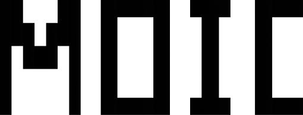

MOICについて
千葉かくう美術館（MOIC）は、現代美術の発展と地域の振興を図り芸術文化の基盤を充実させることを目的として1999年12月に開館いたしました。
約7,000点の収蔵作品を活かして、現代美術の流れを概観できるコレクション展示や国際展をはじめとする特色ある企画展示など、絵画、彫刻、建築、デザイン等幅広く現代美術に関する展覧会を開催しています。
また、美術に関する情報提供、教育普及を目的としたワークショップや講演会等の美術を広める活動を行っています。
MOICからのお知らせ
お知らせ一覧-
イベント -
お知らせ 【重要】8月7日(木) 臨時休館のお知らせ
-
イベント 「納涼ナイトミュージアム2025」